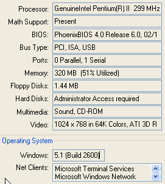

System Information on BIOS
SysInfo-2004-06-02-0805.htm>
2022-05-06
-12:10 -0700
|
|
System Information on BIOS |
|
 |
This screen capture presents a portion of the configuration information, including Processor and BIOS versions, that is built up as part of establishing a running operating system. The illustrated case is obtained from Norton SystemWorks 2003 accessed from an user-level account using Windows XP Pro (SP1). Expanded details shows fine levels of information that are available for inspection about the hardware configuration. This level is important for adaptation of high-performance elements of the operating systems and special-purpose, hardware-sensitive applications: disk-access performance, graphical games, audio performance, video transfer, and network communication. By the time we are at this stage, the BIOS has done its greatest work and is now buried deep in the underware of the layering of operating system functions up to and surrounding the applications that peer through the GUI services to the keyboard, mouse, and display functionality for operation on behalf of an user session. |
| You are navigating Orcmid's Lair |
created
2004-06-02-13:51 -0700 (pdt) by orcmid |